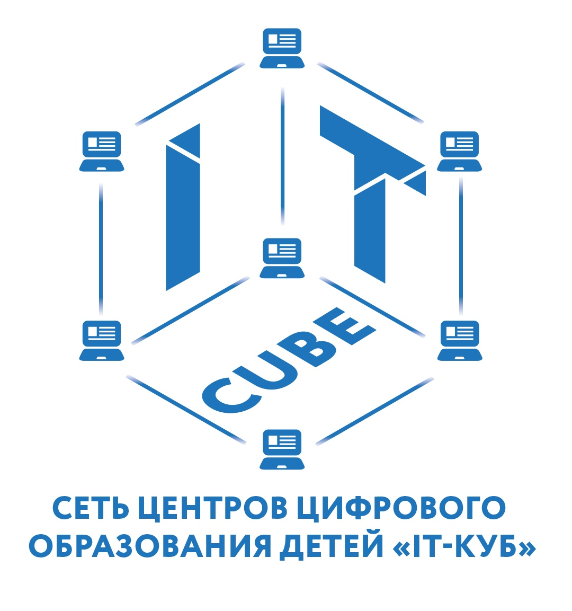

О ЦЕНТРЕ
НАПРАВЛЕНИЯ
НОВОСТИ
КОНТАКТЫ
Мобильные разработки
Программа ориентирована на детей среднего и старшего школьного возраста и нацелена на развитие интереса учащихся к практической работе с мобильными устройствами и программами, формирование представлений об основных правилах и методах программирования мобильных устройств, развитие у учащихся логического мышления, конструкторских способностей в процессе моделирования и экспериментов.